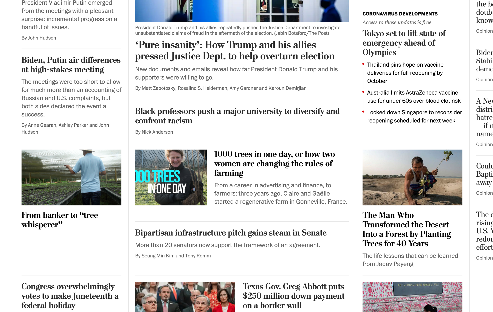
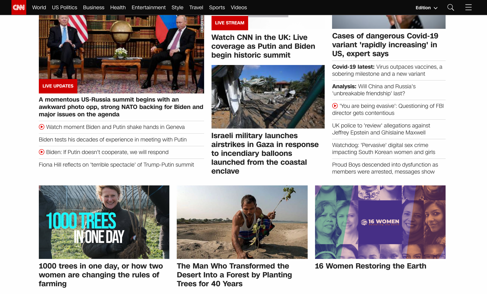
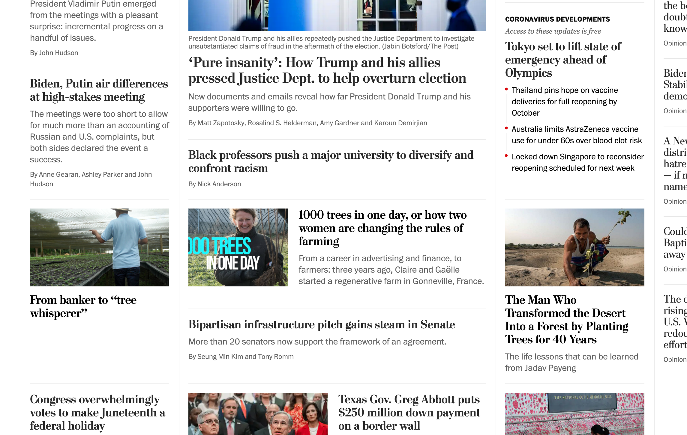
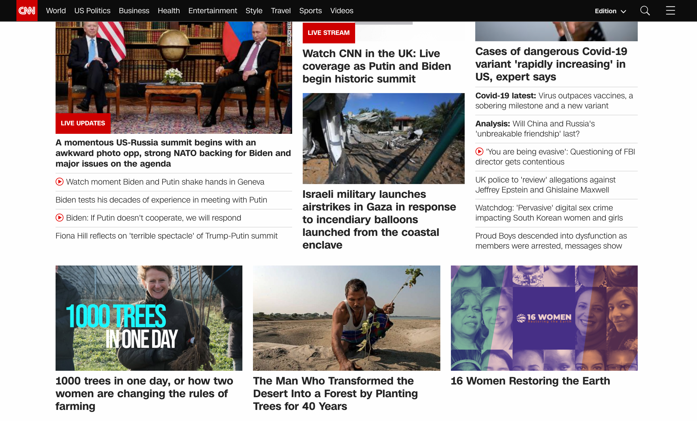
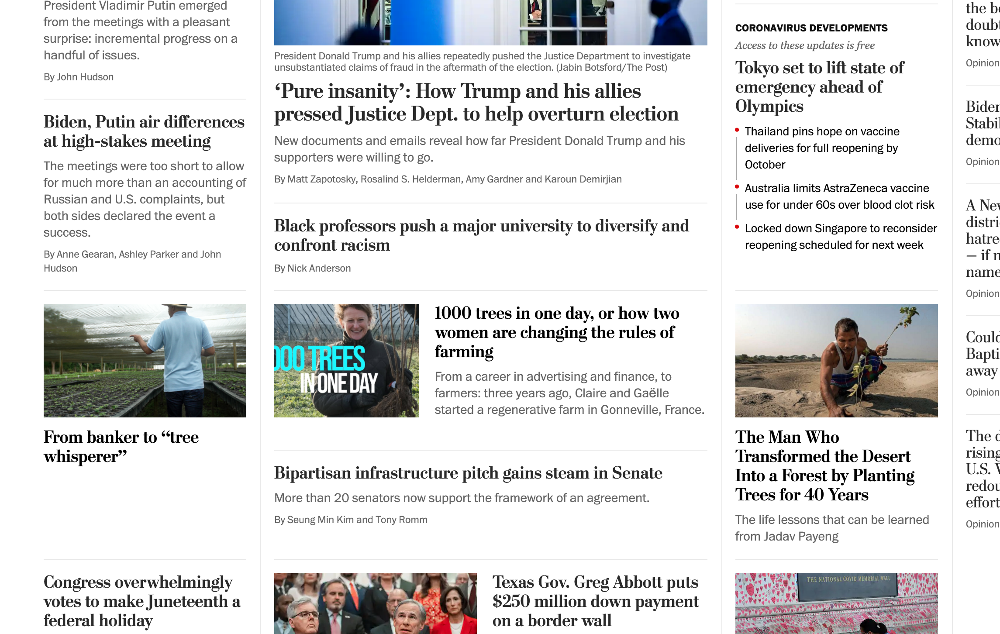
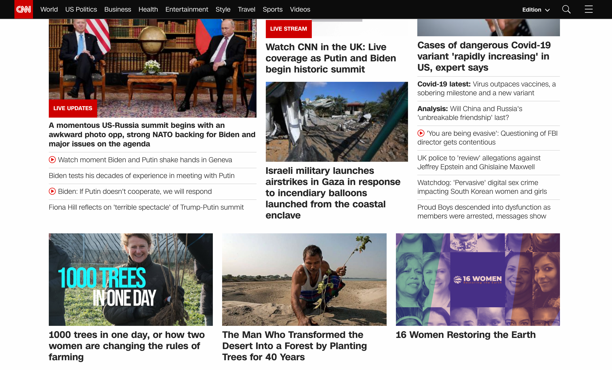
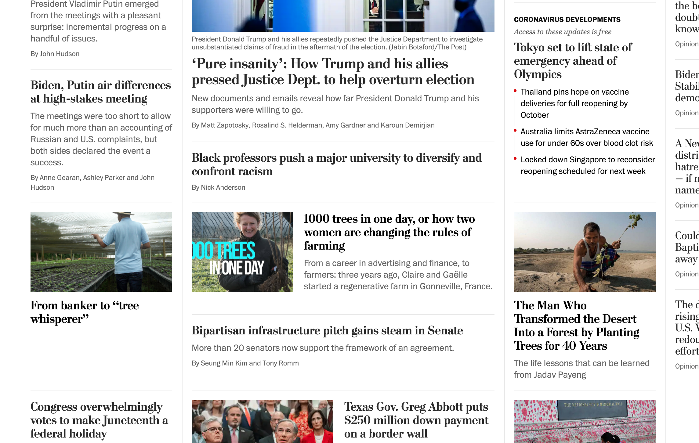
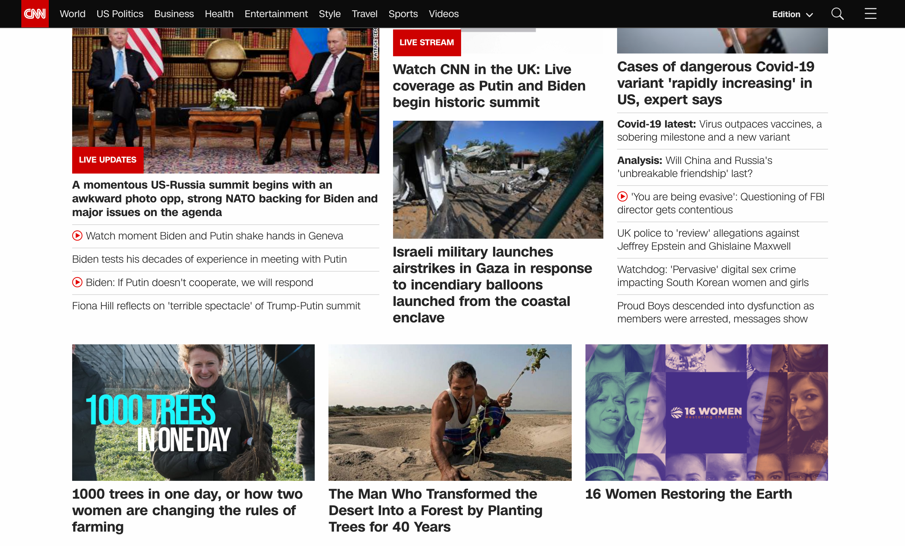

Hi, my name is Marko. I'm a software developer and I love to experiment with different tools. Internet is getting difficult and I'm trying to improve small parts of it.
You can support my work on this on Patreon. (It takes several hours every week to look for good news and keep the code up-to date. And I don't even write any of the articles...)

In short, Uplifters don't use cookies but we do log
page visits, namely country, city and time.
Credits go to all the writers of articles we show to you.
Icons made by Freepik from www.flaticon.com.